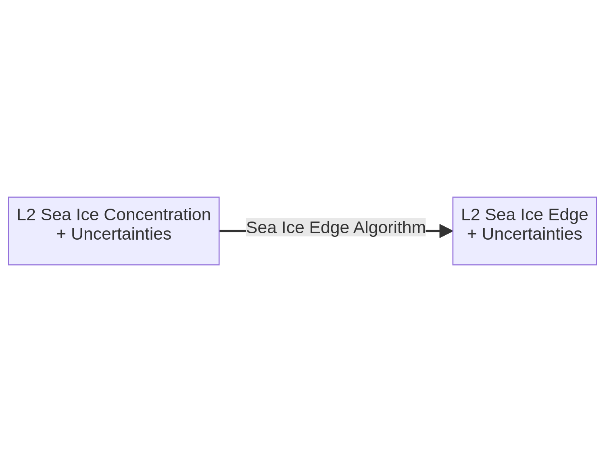

Baseline Algorithm Definition for Sea Ice EDge (SIED)#
This chapter describes the algorithm baseline for the Sea Ice Edge (SIED) fields. We derive SIED from SIC.
Retrieval Method#
Following the CIMR MRD, we define SIED as a ‘binary’ product that identifies sea ice conditions based on their Sea Ice Concentration range. The most basic SIED product is thus one where ‘0’ indicates no significant ice cover (e.g. SIC < 15%) and ‘1’ indicates significant presence of ice (e.g. SIC >= 15%).
CIMR Level-1b re-sampling approach#
Because SIED is derived from the SIC field, there are no further requirements on Level-1b for SIED.
Algorithm Assumptions and Simplifications#
The limitations of the Sea Ice Concentration algorithm translate into those of the Edge product, in particular erroneous sea ice in the coastal regions or underestimation of thin ice can lead to errors in the classification into ice classes as part of the SIED product.
However, it is generally accepted that SIED presents less errors (than SIC) because of using thresholds that can hide some of the issues in SIC.
Level-2 end to end algorithm functional flow diagram#
Functional description of each Algorithm step#
The SIED algorithm is limited to a applying thresholds to transform from a continuous SIC variable, into a ‘binary’ SIEdge class.
Mathematical description#
Input data#
The L2 SIC from the SIC algorithm, possibly without the Open Water Filter. The total uncertainties of L2 SIC.
Output data#
The corresponding L2 SIED flag, and an “probability of correct classification” (scalar).
Auxiliary data#
None
Derivation of total standard uncertainty#
The total standard uncertainty will be expressed as a “probability of correct classification” (a scalar between 0.5 and 1), computed as the integral of the (gaussian) L2 SIC distribution up-until the 15% threshold.
Assuming gaussian distributed uncertainties on the input L2 SIC, the uncertainty of the SIED can be estimated as the probability of correct classification. Intuitively, if a SIC value is far from the 15% threshold (with respect to the width of its uncertainty), the probability of the classification will be close to 1. It will reduce to around 0.5 for a SIC exactly equal to 15% (half of the uncertainty distribution on both sides of the threshold).